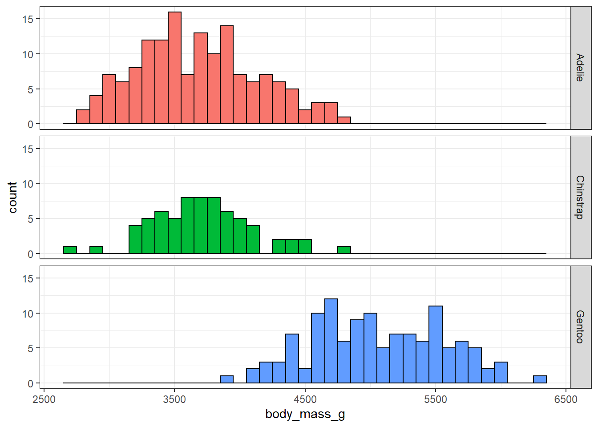

install.packages("dplyr")
install.packages("ggplot2")
install.packages("DBI")
install.packages("duckdb")
install.packages("palmerpenguins")1 Getting started
1.1 A first data analysis in R with a database

Artwork by @allison_horst
Before we start thinking about working with health care data spread across the OMOP common data model, let’s first do a quick data analysis using a simpler dataset. For this we’ll use data data from palmerpenguins package, which contains data on penguins collected from the Palmer Station in Antarctica.
1.2 Getting set up
Assuming that you have R and RStudio already set up, first we need to install a few packages not included in base R if we don´t already have them.
Once installed, we can load them like so.
library(dplyr)
library(ggplot2)
library(DBI)
library(duckdb)
library(palmerpenguins)1.3 Taking a peek at the data
We can get an overview of the data using the glimpse() command.
glimpse(penguins)Rows: 344
Columns: 8
$ species <fct> Adelie, Adelie, Adelie, Adelie, Adelie, Adelie, Adel…
$ island <fct> Torgersen, Torgersen, Torgersen, Torgersen, Torgerse…
$ bill_length_mm <dbl> 39.1, 39.5, 40.3, NA, 36.7, 39.3, 38.9, 39.2, 34.1, …
$ bill_depth_mm <dbl> 18.7, 17.4, 18.0, NA, 19.3, 20.6, 17.8, 19.6, 18.1, …
$ flipper_length_mm <int> 181, 186, 195, NA, 193, 190, 181, 195, 193, 190, 186…
$ body_mass_g <int> 3750, 3800, 3250, NA, 3450, 3650, 3625, 4675, 3475, …
$ sex <fct> male, female, female, NA, female, male, female, male…
$ year <int> 2007, 2007, 2007, 2007, 2007, 2007, 2007, 2007, 2007…Or we could take a look at the first rows of the data using head()
head(penguins, 5)# A tibble: 5 × 8
species island bill_length_mm bill_depth_mm flipper_l…¹ body_…² sex year
<fct> <fct> <dbl> <dbl> <int> <int> <fct> <int>
1 Adelie Torgersen 39.1 18.7 181 3750 male 2007
2 Adelie Torgersen 39.5 17.4 186 3800 fema… 2007
3 Adelie Torgersen 40.3 18 195 3250 fema… 2007
4 Adelie Torgersen NA NA NA NA <NA> 2007
5 Adelie Torgersen 36.7 19.3 193 3450 fema… 2007
# … with abbreviated variable names ¹flipper_length_mm, ²body_mass_g1.4 Inserting data into a database
Let’s put our penguins data into a duckdb database. We create the duckdb database, add the penguins data, and then create a reference to the table containing the data.
db<-dbConnect(duckdb::duckdb(), dbdir=":memory:")
dbWriteTable(db, "penguins", penguins)
penguins_db<-tbl(db, "penguins")Now the data is in a database we could use SQL to get the first rows that we saw before
dbGetQuery(db, "SELECT * FROM penguins LIMIT 5") species island bill_length_mm bill_depth_mm flipper_length_mm body_mass_g
1 Adelie Torgersen 39.1 18.7 181 3750
2 Adelie Torgersen 39.5 17.4 186 3800
3 Adelie Torgersen 40.3 18.0 195 3250
4 Adelie Torgersen NA NA NA NA
5 Adelie Torgersen 36.7 19.3 193 3450
sex year
1 male 2007
2 female 2007
3 female 2007
4 <NA> 2007
5 female 2007But we could also use the same R code as before
head(penguins_db, 5)# Source: SQL [5 x 8]
# Database: DuckDB 0.5.0 [eburn@Windows 10 x64:R 4.2.1/:memory:]
species island bill_length_mm bill_depth_mm flipper_l…¹ body_…² sex year
<fct> <fct> <dbl> <dbl> <int> <int> <fct> <int>
1 Adelie Torgersen 39.1 18.7 181 3750 male 2007
2 Adelie Torgersen 39.5 17.4 186 3800 fema… 2007
3 Adelie Torgersen 40.3 18 195 3250 fema… 2007
4 Adelie Torgersen NA NA NA NA <NA> 2007
5 Adelie Torgersen 36.7 19.3 193 3450 fema… 2007
# … with abbreviated variable names ¹flipper_length_mm, ²body_mass_g1.5 Translation from R to SQL
The magic here is provided by dbplyr which takes the R code and converts it into SQL, which is this case looks like
head(penguins_db, 1) %>%
show_query()<SQL>
SELECT *
FROM penguins
LIMIT 1More complicated SQL can also be written in what might be familiar dplyr code, for example
penguins_db %>%
group_by(species) %>%
summarise(min_bill_length_mm=min(bill_length_mm),
median_bill_length_mm=median(bill_length_mm),
max_bill_length_mm=max(bill_length_mm)) %>%
mutate(min_max_bill_length_mm=paste0(min_bill_length_mm,
" to ",
max_bill_length_mm)) %>%
select("species",
"median_bill_length_mm",
"min_max_bill_length_mm")# Source: SQL [3 x 3]
# Database: DuckDB 0.5.0 [eburn@Windows 10 x64:R 4.2.1/:memory:]
species median_bill_length_mm min_max_bill_length_mm
<fct> <dbl> <chr>
1 Adelie 38.8 32.1 to 46.0
2 Gentoo 47.3 40.9 to 59.6
3 Chinstrap 49.6 40.9 to 58.0 with the corresponding SQL looking like
penguins_db %>%
group_by(species) %>%
summarise(min_bill_length_mm=min(bill_length_mm),
median_bill_length_mm=median(bill_length_mm),
max_bill_length_mm=max(bill_length_mm)) %>%
mutate(min_max_bill_length_mm=paste0(min, " to ", max)) %>%
select("species",
"median_bill_length_mm",
"min_max_bill_length_mm") %>%
show_query()<SQL>
SELECT
species,
median_bill_length_mm,
CONCAT_WS('', .Primitive("min"), ' to ', .Primitive("max")) AS min_max_bill_length_mm
FROM (
SELECT
species,
MIN(bill_length_mm) AS min_bill_length_mm,
PERCENTILE_CONT(0.5) WITHIN GROUP (ORDER BY bill_length_mm) AS median_bill_length_mm,
MAX(bill_length_mm) AS max_bill_length_mm
FROM penguins
GROUP BY species
) q011.6 Example analysis
Let´s start by getting a count by species
penguins_db %>%
group_by(species) %>%
count()# Source: SQL [3 x 2]
# Database: DuckDB 0.5.0 [eburn@Windows 10 x64:R 4.2.1/:memory:]
species n
<fct> <dbl>
1 Adelie 152
2 Gentoo 124
3 Chinstrap 68Now suppose we are particularly interested in the body mass variable. We can first notice that there are a couple of missing records for this.
penguins_db %>%
mutate(missing_body_mass_g=if_else(
is.na(body_mass_g),1,0
)) %>%
group_by(species, missing_body_mass_g) %>%
tally()# Source: SQL [5 x 3]
# Database: DuckDB 0.5.0 [eburn@Windows 10 x64:R 4.2.1/:memory:]
# Groups: species
species missing_body_mass_g n
<fct> <dbl> <dbl>
1 Adelie 0 151
2 Adelie 1 1
3 Gentoo 0 123
4 Gentoo 1 1
5 Chinstrap 0 68We can get the mean for each of the species (dropping those two missing records).
penguins_db %>%
group_by(species) %>%
summarise(mean_body_mass_g=round(mean(body_mass_g, na.rm=TRUE),0))# Source: SQL [3 x 2]
# Database: DuckDB 0.5.0 [eburn@Windows 10 x64:R 4.2.1/:memory:]
species mean_body_mass_g
<fct> <dbl>
1 Adelie 3701
2 Gentoo 5076
3 Chinstrap 3733We can then also do a histogram for each of the species. For this we need to bring the data into R so that we can work with ggplot(), and we use collect() to do this.
penguins_db %>%
collect() %>%
ggplot(aes(group=species, fill=species))+
facet_grid(species~ .) +
geom_histogram(aes(body_mass_g), colour="black", binwidth = 100)+
theme_bw()+
theme(legend.position = "none") 
How about the relationship between body mass and bill depth?
penguins %>%
collect() %>%
ggplot(aes(x=bill_depth_mm,y=body_mass_g))+
geom_point()+
geom_smooth(method="lm",se=FALSE )+
theme_bw()+
theme(legend.position = "none") 
But what about by species?
penguins %>%
collect() %>%
ggplot(aes(x=bill_depth_mm,y=body_mass_g))+
facet_grid(species~ .) +
geom_point()+
geom_smooth(method="lm",se=FALSE )+
theme_bw()+
theme(legend.position = "none") 
As well as having an example of working with data in database from R, you also have an example of Simpson´s paradox! And now we’ve reached the end of this example, we can close the database like so